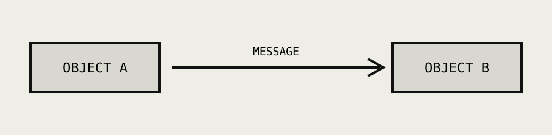

A fictional course advertisement created as a historical study.
What is Smalltalk?
Smalltalk developed at Xerox PARC as both a programming language and an interactive environment. Its object-oriented model treats programs as cooperating objects that communicate by sending messages.

A program as a system of interacting objects. Schematic: OBJECT A -> MESSAGE -> OBJECT B; a simple conceptual diagram — not a historical screen.
THE IDEA
Do not study a program only as text. Work with it as a living system of objects.
Smalltalk made programming, execution and experimentation part of one environment.
Conceptual summary based on the historical research in this project.
THE ALTO ENVIRONMENT
Smalltalk became closely associated with the Xerox Alto: a research workstation with a bitmap display, mouse, networking and local magnetic storage.
SMALLTALK WORKSPACE — Xerox Alto / research workstation
WORKSPACE
Object new open
Message → Object → Response
Stylized reconstruction for this project; not a screenshot of the original system.
ALTO / TECHNICAL NOTES
DISPLAY: bitmap, monochrome, 600×800.
INPUT: mouse. STORAGE: local magnetic packet.
NETWORK: local research resources.
In the selected period, a computer could be imagined as a personal working environment rather than only a remote terminal connected to a large machine.
1972
Early Smalltalk
1976
Smalltalk-76
1980–83
Smalltalk-80, wider exposure
Machine data after era.md and the Alto archive; chronology after research.md.
THE COURSE PROGRAM
Fictional curriculum designed for the historical concept.
Audience: engineers, teachers and researchers working with personal workstations.
01
OBJECTS Learn to describe a program as a collection of interacting objects.
02
MESSAGES Explore how objects communicate and request actions.
03
CLASSES Work with the structures used to describe families of objects.
04
THE INTERACTIVE ENVIRONMENT Experiment with code while remaining inside the development environment.
05
BUILDING A SMALL PERSONAL SYSTEM Combine the ideas into a working experimental environment.
A DYNAMIC MEDIUM
Smalltalk was imagined in the context of the Dynabook: Alan Kay's concept of a personal dynamic computer as a medium for learning, modelling and creating. It belongs to a wider PARC effort to build software for such a machine.
Not only calculate. Explore.
The Dynabook was a concept, not a mass-market product.
SMALLTALK-80
By the early 1980s Smalltalk-80 helped carry the project beyond its original research environment. A 1981 BYTE special issue introduced the system to a broader programming audience, and the 1983 book by Adele Goldberg and David Robson documented the language and its implementation.
BYTE SPECIAL ISSUE / 1981
SMALLTALK-80: THE LANGUAGE AND ITS IMPLEMENTATION / 1983
LANGUAGE + ENVIRONMENT + OBJECTS
ENTER THE LABORATORY
Try programming as though the personal computer has already become a dynamic medium.
NAME _______________________________
LAB ________________________________
START ______________________________
Smalltalk Laboratory is a fictional organization created for this student historical project. No real course is being advertised.